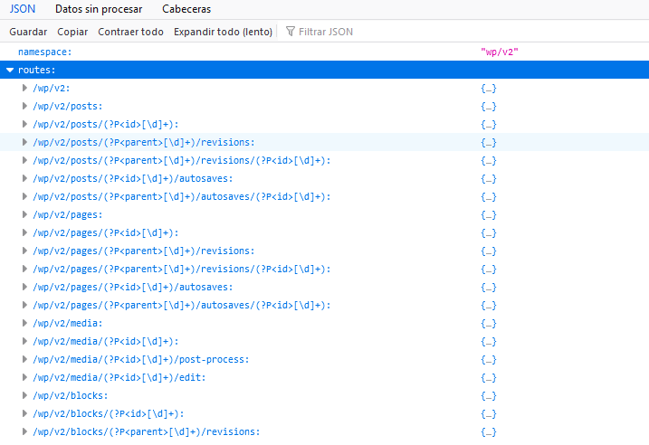

Implementación de Wordpress en Angular
Primer Paso
Se procede a verificar el funcionamiento de la versión 2 de WordPress Rest Api, para ello prueba haciendo una llamada HTTP a tu sitio WordPress, para ello ingresa la siguiente URL: http://tusitiowordpres.com/wp-json/wp/v2/posts que devolverá un JSON como este:
Segundo Paso
Despúes de comprobar el funcionamiento del punto final en la ruta del sitio, se procede a instalar el siguiente plugin: Plugin WordPressAutenticación en nuestro sitio WordPress para la autenticación JWT que permitirá la Creación, Modificación y Eliminación de Posts del blog.
Tercer Paso
Nota
Antes de continuar es opcional modificar el entorno del front (Angular) para añadir los endpoints que se implementará de la API. De lo contrario, puede definirse en cada uno de los servicios en los que se implemente.
export const environment = {
production: false,
WP_REST: {
API: 'https://tudominio.com/wp-json/wp/v2/',
AUTH: 'https://tudominio.com/wp-json/jwt-auth/v1/token'
}
};
Se procede a crear interfaces, servicios y componentes en el Front (Angular) para efectuar las diferentes llamadas a la rest API.